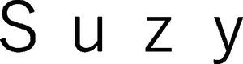

Trade Mark Journal No.2025/044 31 October 2025
WO0000001856907 (9,25,41,42)
Office of origin: Japan
Date of International Registration:22 January 2025
Date of designation in the UK:
22 January 2025

International priority date claimed: 24 December 2024
(Japan)
- Class 9
- Computer programs; electronic publications, downloadable; computer software applications, downloadable; electronic data processing machines, apparatus, and their parts; electronic control apparatus for machines; electronic components for machines and apparatus; electronic control apparatus for automatic machines; telecommunication machines and apparatus; personal digital assistants; measuring or testing machines and instruments; computer software, recorded.
- Class 25
- Clothing; clothing for sports; footwear [other than special footwear for sports]; special footwear for sports; shoes and boots [other than special footwear for sports]; T-shirts; skirts; trousers; pants; gloves as clothing; headwear; athletic pants; training suits.
- Class 41
- Educational and instruction services relating to arts, crafts, sports or general knowledge and providing information or advice on these matters; physical fitness instruction; providing instruction in the field of physical exercise; aerobics training services; strength and conditioning training services; educational and instruction services relating to exercise methods in athletic gyms; consultancy or information services relating to arranging, conducting and organisation of seminars, workshops [training], lectures, training courses or symposiums; consultancy or information services relating to arranging, conducting and organisation of sporting activities; consultancy and information services relating to organization of entertainment events excluding movies, shows, plays, musical performances, sports, horse races, bicycle races, boat races and auto races; providing sports facilities; health club services [health and fitness training]; health and fitness club, and gym services; providing gym services for bodybuilding, weight training and other exercise gyms; production of videos or recording media for educational, cultural, entertainment or sports purposes, except movies, broadcast programs and advertising; providing online videos, images, music, audio or text, not downloadable; providing amusement facilities; providing electronic publications, not downloadable; reference libraries of literature and documentary records; publication of books; directing of radio and television programs; rental of sports equipment, except vehicles.
- Class 42
- Design of industrial products; design of new products; computer programming; creating or maintaining web sites for others; rental of computers; providing computer programs on data networks; software as a service [SaaS]; platform as a service [PaaS]; providing virtual computer systems through cloud computing; providing on-line non-downloadable computer software; technological advice relating to computers, automobiles and industrial machines; providing search engines for the internet; designing of machines, apparatus, instruments [including their parts] or systems composed of such machines, apparatus and instruments; rental of measuring apparatus; rental of laboratory apparatus and instruments.
Curves International, Inc.
Representative: ITOH Patent Attorney Corporation, Meiji Yasuda Seimei Building 16th Floor,, 1-1, Marunouchi 2-chome,, Chiyoda-ku, Tokyo 100-0005, JAPAN